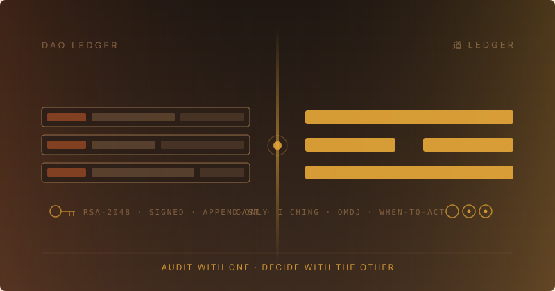

67 stores are sitting in our partner warmup queue. Zero emails went out this week.
The cron is healthy. The drafts are ready. The Gmail labels are wired. The contact-enrichment job ran on schedule. By every measurable signal, the pipeline is green.
We didn’t send.
Explaining why takes two ledgers. One is the kind a DAO keeps. The other is the kind 道 — the classical Chinese sense of the Way — has kept for three thousand years. TrueSight DAO runs both, on purpose, and the warmup queue is where you can see them dividing the work.
The DAO ledger
The DAO ledger is what you’d expect from anything that calls itself a DAO. Every contribution — a developer hour, a USD expense, a bag of ceremonial cacao received in Bahia — is signed RSA-2048 by the contributor’s key, dispatched through Edgar, and appended as an immutable row. Proposals are pull requests on TrueSightDAO/proposals; a 7-day signed vote merges the PR or closes it. Voting rights cash out at a rate the spreadsheet computes mechanically — (your_rights / total_rights) × USD provisions. The double-entry offchain ledger pairs every cash outflow with the inventory leg it bought. Once the planned TrueChain mirror produces blocks, those rows become tamper-proof on a private Geth network whose only governance is the signature on each transaction.
This part is not philosophy. It’s plumbing. It exists so that a contributor in Bahia and a contributor in San Francisco can claim voting rights against each other on equal terms — and so that no one, including us, can quietly rewrite history when it becomes convenient.
The 道 ledger
The 道 ledger governs whether and when to act on what the DAO ledger records.
Decisions in this project route through advisors named for what they do well. Dr Manhattan checks systems coherence; Seth Godin reviews positioning; the I Ching oracle at oracle.truesight.me throws six coins and reads the moment they land in. The oracle is paired with a QiMenDunJia chart computed for the same instant — a modern synthesis the UI is honest about — so the advisory has both a transformational lens and a structural one.
The north star is six words: Heal the world with love. Restore 10,000 hectares of Amazon rainforest. No smart contract enforces it. The partner outreach protocol literally names a principle called human-in-the-loop and refuses to add a --send flag. Drafts get written; humans send them. The cadence rule is “no next email to the same recipient for at least seven days.”
This part isn’t decoration. It exists because checkable progress toward the wrong goal is still the wrong goal.
Why the 67 stores didn’t get an email
Read through DAO mechanics alone, the warmup pipeline looks broken. The rails are green. Why no sends?
Read with both ledgers and the picture finishes. The dormant-vs-high-velocity signal generator that decides who gets a warmup is waiting for four weekly refreshes of partner velocity numbers before anyone trusts it. The acceptance criterion in our backlog is, verbatim, “wait till settle.” Meanwhile the Beer Hall WhatsApp digest was retired earlier this year after three community members said the firehose was too noisy — and replaced with a calmer archive-only flow that auto-merges the daily changelog instead of pushing it into anyone’s phone.
Both readings are true. The DAO ledger correctly identifies that the rails are green. The 道 ledger correctly identifies that this is not the moment.
Audit with one. Decide with the other.
That sentence is the whole architecture.
真观道
In Chinese the project’s name is 真观道 — zhēn guān dào. 真 (true) · 观 (behold) · 道 (way). The way of true beholding.
The English “TrueSight DAO” reads as a Web3 brand and an acronym. The Chinese name has always meant something more complete: 道 was never an addition. It was the third character all along. The DAO is what the auditable, signed, append-only container looks like when 真观 has to operate at distance — across languages, across time zones, between strangers who share a mission but not a kitchen.
The seam this post has been describing isn’t a synthesis of two foreign traditions. It’s the recovery, in English, of what the project’s own Chinese name has been saying since the beginning.
The tribe
This is for people who can sign a commit and throw a coin cast in the same week without feeling fragmented. People who think rigor and reverence aren’t opposites. People who want their progress toward 10,000 hectares of restored Amazon forest to be checkable and worth checking.
If that sounds like you, the lowest-friction way in is also the most honest one: throw a cast at oracle.truesight.me. Ask it something you actually care about. Read what comes back. You’ll learn what kind of place this is faster than any blog post can tell you.
The append-only ledger and the I Ching read the same moment differently, by design — because 真观道 was always the design. That’s not two systems competing for the same role. It’s one project remembering, in two languages, what its own name already said.
Join the discussion
Share your thoughts in Telegram, Beer Hall, and on the DAO web app.